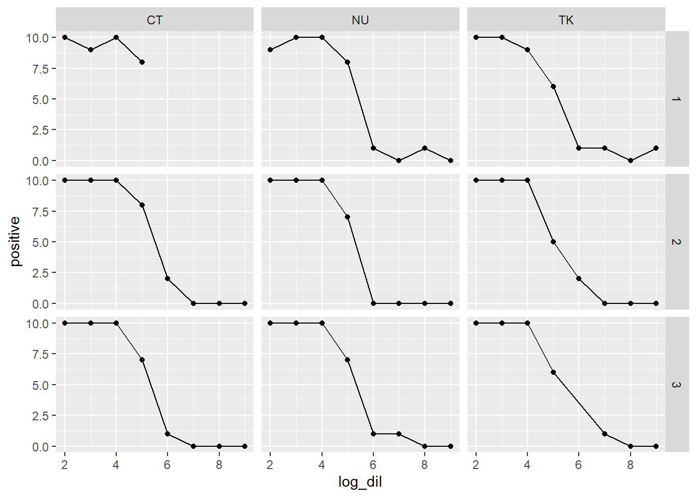

Using skrmdb
2026-10-08
Notation
The methods of Spearman-Kärber, Reed-Muench, and Dragstedt-Behrens are all commonly used to estimate ED50. In what follows, we use the following variable notation:
-
xis a vector corresponding to the log dilution or dose for each group. -
nis an integer vector corresponding to the group size at each log dilution or dose. -
yis an integer vector corresponding to the number responding at each log dilution or dose.
All examples use SpearKarb(). However, the usage for DragBehr(), ReedMuench(), and skrmdb.all() is identical.
Usage
Each of the main functions in skrmdb can be called in three different ways.
To illustrate this, we start with a simple data set where the number dead increases with the dosage.
Example 1
First we use the deprecated historical function call. We will also suppress extra messages that help interpret the data.
Warning: The `y`, `n`, and `x` arguments of `SpearKarb()` was deprecated in skrmdb
5.0.0.
ℹ Use the `data` and `formula` arguments instead.skrmdb :: Autosorting dilution sequences.ED50 by the Spearman-Karber method.
ed var Duplicate Dilutions Response Monotonic Bracket
2.900 0.069 No Regular Increasing Yes Yes Example 2
The preferred method is to use formulas in the function call.
We can use a formula with individual vectors.
Example 3
We can also use the same formula on columns in a data.frame.
data <- data.frame(y = dead, n = total, x = dil)
print(
SpearKarb(data, y + n ~ x),
verbose = FALSE
)ED50 by the Spearman-Karber method.
ed var Duplicate Dilutions Response Monotonic Bracket
2.900 0.069 No Regular Increasing Yes Yes Conditional ED50
ED50 can also be estimated conditional on grouping variables. To illustrate this, we use the example data set titration. This data.frame contains the results of a hypothetical experiment where the ED50 in which three vials (numbered 1, 2, 3) were each tested by three anonymous operators (TK, NU, CT).
head(titration) testID PrepID PrepRole Date Vial Operator dil positive total
1 BRSV BRSV-001 test 03-Mar-19 1 TK 1e-02 10 10
2 BRSV BRSV-001 test 03-Mar-19 1 TK 1e-03 10 10
3 BRSV BRSV-001 test 03-Mar-19 1 TK 1e-04 9 10
4 BRSV BRSV-001 test 03-Mar-19 1 TK 1e-05 6 10
5 BRSV BRSV-001 test 03-Mar-19 1 TK 1e-06 1 10
6 BRSV BRSV-001 test 03-Mar-19 1 TK 1e-07 1 10First, we need to compute the log dilution.
titration$log_dil <- -log10(titration$dil)The plot suggests that the tests give roughly similar ED50 values, but some data points are missing. For example, Vial 3 by TK is missing a count at log_dil == 6 and Vial 1 by CT is missing counts for log_dil >= 6.
ggplot(titration, aes(x = log_dil, y = positive)) +
geom_point() +
facet_grid(Vial ~ Operator) +
geom_line()
Example 1
We can estimate ED50 by aggregating the data from all nine tests for each of the three methods.
Example 2
We can also check for differences between operators:
ED50 by the Spearman-Karber method.
Operator ed var Duplicate Dilutions Response Monotonic Bracket
CT 5.383 0.014 Yes Regular Decreasing No Yes
NU 5.333 0.012 Yes Regular Decreasing No Yes
TK 5.283 0.020 Yes Regular Decreasing No Yes Example 3
Or by vial:
ED50 by the Spearman-Karber method.
Vial ed var Duplicate Dilutions Response Monotonic Bracket
1 5.383 0.022 Yes Regular Decreasing Yes Yes
2 5.300 0.012 Yes Regular Decreasing Yes Yes
3 5.333 0.015 Yes Regular Decreasing Yes Yes Example 4
Or by operator and vial.
ED50 by the Spearman-Karber method.
Operator Vial ed var Duplicate Dilutions Response Monotonic Bracket
CT 1 5.200 0.028 No Regular Decreasing No No
CT 2 5.500 0.036 No Regular Decreasing Yes Yes
CT 3 5.300 0.033 No Regular Decreasing Yes Yes
NU 1 5.400 0.048 No Regular Decreasing No Yes
NU 2 5.200 0.023 No Regular Decreasing Yes Yes
NU 3 5.400 0.043 No Regular Decreasing Yes Yes
TK 1 5.300 0.067 No Regular Decreasing No Yes
TK 2 5.200 0.046 No Regular Decreasing Yes Yes
TK 3 5.550 0.082 No Irregular Decreasing Yes Yes Multiple Tests
A helper function skrmdb.all() estimates ED50 using all three methods provided by this package. This function is called in the same way that DragBehr(), ReedMuench(), and SpearKarb() are called, and the output is similar.
print(
skrmdb.all(titration, positive + total ~ log_dil | Operator + Vial),
verbose = FALSE
)ED50 by the all skrmdb methods.
Operator Vial DragBehr ReedMuench SpearKarb SpearKarb.var Duplicate Dilutions Response Monotonic Bracket
CT 1 NA NA 5.200 0.028 No Regular Decreasing No No
CT 2 5.500 5.500 5.500 0.036 No Regular Decreasing Yes Yes
CT 3 5.349 5.312 5.300 0.033 No Regular Decreasing Yes Yes
NU 1 5.430 5.412 5.400 0.048 No Regular Decreasing No Yes
NU 2 5.286 5.235 5.200 0.023 No Regular Decreasing Yes Yes
NU 3 5.412 5.375 5.400 0.043 No Regular Decreasing Yes Yes
TK 1 5.306 5.267 5.300 0.067 No Regular Decreasing No Yes
TK 2 5.185 5.154 5.200 0.046 No Regular Decreasing Yes Yes
TK 3 5.483 5.400 5.550 0.082 No Irregular Decreasing Yes Yes Output
By default, the print statement for a skrmdb object gives an interpretation of the columns in the table. This should help explain any ways in which the data deviate from the assumptions made by the methods (See the next section).
DragBehr(titration, positive + total ~ log_dil | Operator + Vial)ED50 by the Dragstedt-Behrens method.
Operator Vial ed Duplicate Dilutions Response Monotonic Bracket
CT 1 NA No Regular Decreasing No No
CT 2 5.500 No Regular Decreasing Yes Yes
CT 3 5.349 No Regular Decreasing Yes Yes
NU 1 5.430 No Regular Decreasing No Yes
NU 2 5.286 No Regular Decreasing Yes Yes
NU 3 5.412 No Regular Decreasing Yes Yes
TK 1 5.306 No Regular Decreasing No Yes
TK 2 5.185 No Regular Decreasing Yes Yes
TK 3 5.483 No Irregular Decreasing Yes Yes
✔ No duplicate dilutions detected.
✖ Possible missing dilution or irregular dilution series detected.
✔ All count trends appear to decrease as x increases.
`autosort == TRUE`: decreasing response ED50 values computed using 1-y/n.
✖ Some count trends are not monotonic along x.
✖ Some count trends do not bracket ED50. Method Assumptions
Each of these methods was designed under the following assumptions:
- The group size \(n_i\) is constant.
- The log dilutions \(\mathbf{x} = \{x_1, x_2, \dots, x_k\}\) form an increasing sequence.
- The sequence \(\mathbf{x}\) is arithmetic. That is, there is some number \(\Delta\) such that \(x_k = (k - 1) \times \Delta\) for all \(k\).
- The count ratio sequence \(\mathbf{r} = \{r_1, r_2, \dots, r_k\}\), defined by \(r_i = y_i / n_i\), trends from smaller to larger.
- Preferably, the count ratio sequence is monotonic, that is \(r_i \leq r_{i+1}\) for all \(i\).
- The log dilution sequence brackets ED50. That is, there is an \(i\) such that \(x_i \leq \text{ED50} \leq x_{i+1}\). Note: This is not equivalent to saying that there is an \(i\) such that \(r_i \leq 0.5 \leq r_{i+1}\). However, if it is the case that \(0.5 < r_1\) or \(r_k < 0.5\), then the log dilution sequence will not bracket ED50.
The functions in this package will automatically sort the data by x and then determine whether \(y_i/n_i\) or \(1-y_i/n_i\) better meets the criterion that the response sequence be increasing. The selected sequence will be used to estimate ED50. In the case of noisy data, it may be best to gather more data or optimize the experiment before using any of these methods.
To illustrate this, we create some data where the number dead decreases as dilution increases, and so the number alive is increases.
Given the assumptions that the methods make, it is appropriate to estimate ED50 from alive + total ~ dil, but we see that no matter how we enter the data, the same ED50 is reported.
We can turn off the auto-sort feature, which will still give us a correct estimate of ED50 for alive + total ~ dil, but and incorrect estimate for dead + total ~ dil.
Accessor Functions
Finally, there are three accessor functions to help retrieve information from the results of DragBehr(), ReedMuench(), and SpearKarb().
Using the titration data set again:
res <- SpearKarb(titration, positive + total ~ log_dil)skrmdb :: Combining results from duplicate dilutions.We can retrieve the estimated ED50: (Note: getED50() only works on skrmdb objects, which are returned by DragBehr(), ReedMuench(), and SpearKarb(), not on skrmdb.all objects.)
getED50(res)[1] 5.332341The variance:
getVar(res)[1] 0.005014876The data which were used:
getData(res) y n x y_inc y_dec Duplicate Dilutions Response Monotonic Bracket
1 89 90 2 56 4984 Yes Regular Decreasing Yes Yes
2 89 90 3 56 4984 Yes Regular Decreasing Yes Yes
3 89 90 4 56 4984 Yes Regular Decreasing Yes Yes
4 62 90 5 1568 3472 Yes Regular Decreasing Yes Yes
5 8 70 6 4464 576 Yes Regular Decreasing Yes Yes
6 3 80 7 4851 189 Yes Regular Decreasing Yes Yes
7 1 80 8 4977 63 Yes Regular Decreasing Yes Yes
8 1 80 9 4977 63 Yes Regular Decreasing Yes YesThe results table:
getResults(res) ed var Duplicate Dilutions Response Monotonic Bracket
1 5.332341 0.005014876 Yes Regular Decreasing Yes Yes